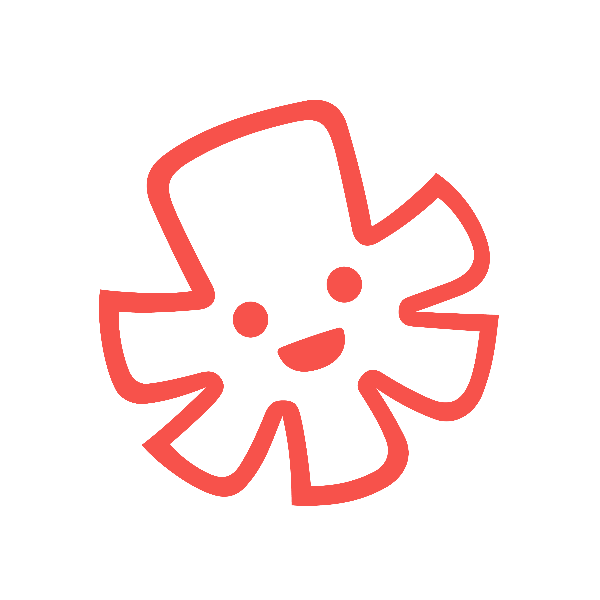

Life right now
Founded Tactopus, a fun company that designs and develops multi-sensory learning experiences, making education inclusive to children with vision loss. I'm achingly proud of my team. I'd give nothing in exchange for the journey this startup has taken me along.
|
|